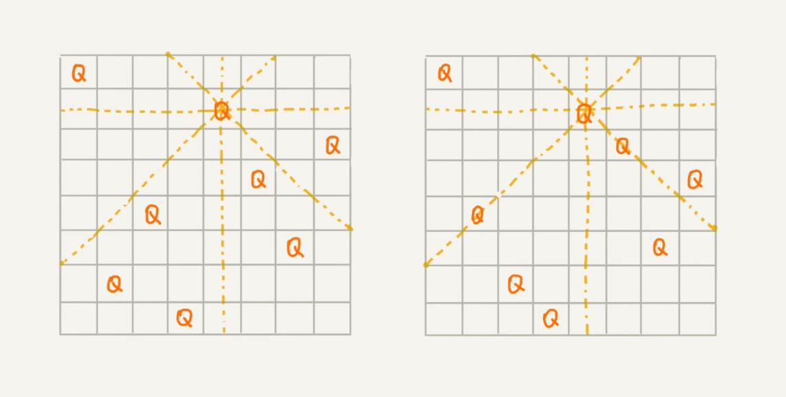

本文最后更新于：9 个月前
深度优先搜索算法利用的是回溯算法思想。这个算法思想非常简单，但是应用却非常广泛。它除了用来指导像深度优先搜索这种经典的算法设计之外，还可以用在很多实际的软件开发场景中，比如正则表达式匹配、编译原理中的语法分析等。
除此之外，很多经典的数学问题都可以用回溯算法解决，比如数独、八皇后、0-1 背包、图的着色、旅行商问题、全排列等等。
如何理解“回溯算法”？
在人们的一生中，会遇到很多重要的岔路口。在岔路口上，每个选择都会影响今后的人生。有的人在每个岔路口都能做出最正确的选择，最后生活、事业都达到了一个很高的高度；而有的人一路选错，最后碌碌无为。如果人生可以量化，那如何才能在岔路口做出最正确的选择，让自己的人生“最优”呢？
可以借助前面学过的贪心算法，在每次面对岔路口的时候，都做出看起来最优的选择，期望这一组选择可以使得人生达到“最优”。但是，前面也讲过，贪心算法并不一定能得到最优解。那有没有什么办法能得到最优解呢？
2004 年上映了一部非常著名的电影《蝴蝶效应》，讲的就是主人公为了达到自己的目标，一直通过回溯的方法，回到童年，在关键的岔路口，重新做选择。当然，这只是科幻电影，人生是无法倒退的，但是这其中蕴含的思想其实就是回溯算法。
笼统地讲，回溯算法很多时候都应用在“搜索”这类问题上。不过这里说的搜索，并不是狭义的指前面讲过的图的搜索算法，而是在一组可能的解中，搜索满足期望的解。
回溯的处理思想，有点类似枚举搜索。枚举所有的解，找到满足期望的解。为了有规律地枚举所有可能的解，避免遗漏和重复，把问题求解的过程分为多个阶段。每个阶段，都会面对一个岔路口，先随意选一条路走，当发现这条路走不通的时候（不符合期望的解），就回退到上一个岔路口，另选一种走法继续走。
理论的东西还是过于抽象，还是举例说明一下。举一个经典的回溯例子，你可能已经猜到了，那就是八皇后问题。
有一个 8x8 的棋盘，希望往里放 8 个棋子（皇后），每个棋子所在的行、列、对角线都不能有另一个棋子。可以看下面的图，第一幅图是满足条件的一种方法，第二幅图是不满足条件的。八皇后问题就是期望找到所有满足这种要求的放棋子方式。

把这个问题划分成 8 个阶段，依次将 8 个棋子放到第一行、第二行、第三行……第八行。在放置的过程中，不停地检查当前的方法，是否满足要求。如果满足，则跳到下一行继续放置棋子；如果不满足，那就再换一种方法，继续尝试。
回溯算法非常适合用递归代码实现，所以，把八皇后的算法翻译成代码。在代码里添加了详细的注释，你可以对比着看下。
int[] result = new int[8];// 全局或成员变量, 下标表示行, 值表示 queen 存储在哪一列
public void cal8queens(int row) { // 调用方式：cal8queens(0);
if (row == 8) { // 8 个棋子都放置好了，打印结果
printQueens(result);
return; // 8 行棋子都放好了，已经没法再往下递归了，所以就 return
}
for (int column = 0; column < 8; ++column) { // 每一行都有 8 中放法
if (isOk(row, column)) { // 有些放法不满足要求
result[row] = column; // 第 row 行的棋子放到了 column 列
cal8queens(row+1); // 考察下一行
}
}
}
private boolean isOk(int row, int column) {// 判断 row 行 column 列放置是否合适
int leftup = column - 1, rightup = column + 1;
for (int i = row-1; i >= 0; --i) { // 逐行往上考察每一行
if (result[i] == column) return false; // 第 i 行的 column 列有棋子吗？
if (leftup >= 0) { // 考察左上对角线：第 i 行 leftup 列有棋子吗？
if (result[i] == leftup) return false;
}
if (rightup < 8) { // 考察右上对角线：第 i 行 rightup 列有棋子吗？
if (result[i] == rightup) return false;
}
--leftup; ++rightup;
}
return true;
}
private void printQueens(int[] result) { // 打印出一个二维矩阵
for (int row = 0; row < 8; ++row) {
for (int column = 0; column < 8; ++column) {
if (result[row] == column) System.out.print("Q ");
else System.out.print("* ");
}
System.out.println();
}
System.out.println();
}两个回溯算法的经典应用
回溯算法的理论知识很容易弄懂。不过，对于新手来说，比较难的是用递归来实现。所以，再通过两个例子，来练习一下回溯算法的应用和实现。
1. 0-1 背包
0-1 背包是非常经典的算法问题，很多场景都可以抽象成这个问题模型。这个问题的经典解法是动态规划，不过还有一种简单但没有那么高效的解法，那就是回溯算法。
0-1 背包问题有很多变体，这里介绍一种比较基础的。有一个背包，背包总的承载重量是 Wkg。现在有 n 个物品，每个物品的重量不等，并且不可分割。现在期望选择几件物品，装载到背包中。在不超过背包所能装载重量的前提下，如何让背包中物品的总重量最大？
实际上，背包问题在贪心算法那一篇，已经讲过一个了，不过那里讲的物品是可以分割的，可以装某个物品的一部分到背包里面。这里的背包问题，物品是不可分割的，要么装要么不装，所以叫 0-1 背包问题。显然，这个问题已经无法通过贪心算法来解决了。现在来看看，用回溯算法如何来解决。
对于每个物品来说，都有两种选择，装进背包或者不装进背包。对于 n 个物品来说，总的装法就有 $2^n$ 种，去掉总重量超过 Wkg 的，从剩下的装法中选择总重量最接近 Wkg 的。不过，如何才能不重复地穷举出这 $2^n$ 种装法呢？
这里就可以用回溯的方法。可以把物品依次排列，整个问题就分解为了 n 个阶段，每个阶段对应一个物品怎么选择。先对第一个物品进行处理，选择装进去或者不装进去，然后再递归地处理剩下的物品。描述起来很费劲，直接看代码，反而会更加清晰一些。
这里还稍微用到了一点搜索剪枝的技巧，就是当发现已经选择的物品的重量超过 Wkg 之后，就停止继续探测剩下的物品。
public int maxW = Integer.MIN_VALUE; // 存储背包中物品总重量的最大值
// cw 表示当前已经装进去的物品的重量和；i 表示考察到哪个物品了；
// w 背包重量；items 表示每个物品的重量；n 表示物品个数
// 假设背包可承受重量 100，物品个数 10，物品重量存储在数组 a 中，那可以这样调用函数：
// f(0, 0, a, 10, 100)
public void f(int i, int cw, int[] items, int n, int w) {
if (cw == w || i == n) { // cw==w 表示装满了 ;i==n 表示已经考察完所有的物品
if (cw > maxW) maxW = cw;
return;
}
f(i+1, cw, items, n, w);
if (cw + items[i] <= w) {// 已经超过可以背包承受的重量的时候，就不要再装了
f(i+1,cw + items[i], items, n, w);
}
}2. 正则表达式
对于一个开发工程师来说，正则表达式你应该不陌生吧？在平时的开发中，或多或少都应该用过。实际上，正则表达式里最重要的一种算法思想就是回溯。
正则表达式中，最重要的就是通配符，通配符结合在一起，可以表达非常丰富的语义。为了方便，假设正表达式中只包含“ * ”和“ ? ”这两种通配符，并且对这两个通配符的语义稍微做些改变，其中，“ * ”匹配任意多个（大于等于 0 个）任意字符，“ ? ”匹配零个或者一个任意字符。基于以上背景假设，如何用回溯算法，判断一个给定的文本，能否跟给定的正则表达式匹配？
依次考察正则表达式中的每个字符，当是非通配符时，就直接跟文本的字符进行匹配，如果相同，则继续往下处理；如果不同，则回溯。如果遇到特殊字符的时候，就有多种处理方式了，也就是所谓的岔路口，比如“ * ”有多种匹配方案，可以匹配任意个文本串中的字符，就先随意的选择一种匹配方案，然后继续考察剩下的字符。如果中途发现无法继续匹配下去了，就回到这个岔路口，重新选择一种匹配方案，然后再继续匹配剩下的字符。
把这个过程翻译成了代码，你可以结合着一块看下。
public class Pattern {
private boolean matched = false;
private char[] pattern; // 正则表达式
private int plen; // 正则表达式长度
public Pattern(char[] pattern, int plen) {
this.pattern = pattern;
this.plen = plen;
}
public boolean match(char[] text, int tlen) { // 文本串及长度
matched = false;
rmatch(0, 0, text, tlen);
return matched;
}
private void rmatch(int ti, int pj, char[] text, int tlen) {
if (matched) return; // 如果已经匹配了，就不要继续递归了
if (pj == plen) { // 正则表达式到结尾了
if (ti == tlen) matched = true; // 文本串也到结尾了
return;
}
if (pattern[pj] == '*') { // * 匹配任意个字符
for (int k = 0; k <= tlen-ti; ++k) {
rmatch(ti+k, pj+1, text, tlen);
}
} else if (pattern[pj] == '?') { // ? 匹配 0 个或者 1 个字符
rmatch(ti, pj+1, text, tlen);
rmatch(ti+1, pj+1, text, tlen);
} else if (ti < tlen && pattern[pj] == text[ti]) { // 纯字符匹配才行
rmatch(ti+1, pj+1, text, tlen);
}
}
}总结
回溯算法的思想非常简单，大部分情况下，都是用来解决广义的搜索问题，也就是，从一组可能的解中，选择出一个满足要求的解。回溯算法非常适合用递归来实现，在实现的过程中，剪枝操作是提高回溯效率的一种技巧。利用剪枝，并不需要穷举搜索所有的情况，从而提高搜索效率。
尽管回溯算法的原理非常简单，但是却可以解决很多问题，比如开头提到的深度优先搜索、八皇后、0-1 背包问题、图的着色、旅行商问题、数独、全排列、正则表达式匹配等等。如果感兴趣的话，可以自己搜索研究一下，最好还能用代码实现一下。如果这几个问题都能实现的话，基本就掌握了回溯算法。
思考
- 现在对今天讲到的
0-1背包问题稍加改造，如果每个物品不仅重量不同，价值也不同。如何在不超过背包重量的情况下，让背包中的总价值最大？欢迎留言和我分享。
本博客所有文章除特别声明外，均采用 CC BY-SA 3.0协议 。转载请注明出处！